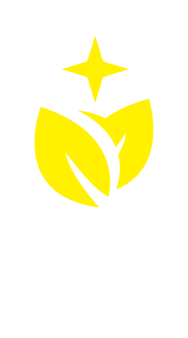

從視覺到活動，從空間到社群，全方位服務，成就品牌的完整故事。
用光與影交織品牌形象，設計出獨特的視覺語言，讓品牌在繁忙的世界中脫穎而出。
影像剪輯、短影音、動態圖像與直播視覺，讓品牌故事在畫面中流動起來。
將文化內涵注入實用美學，設計商品成為生活中的藝術品，讓品牌故事伴隨每一次觸摸。
為品牌打造沉浸式空間，讓每個場域都成為故事與藝術交匯的舞台。
結合創意與策略，為品牌在數位平台上建立溫度與深度，成為用戶心中的光芒。
用策略與藝術結合，挖掘品牌的核心價值，讓品牌聲音深入人心。
我們用文字雕刻品牌的情感與故事，讓每一篇文案都如詩般傳遞深刻意義。
以文化與創意為基石，策劃獨具風格的品牌活動，創造令人銘記的現場體驗。
促進多元文化間的交流合作，讓品牌成為跨越界限的橋樑。
橫跨公部門、原民文化、藝文節慶、科技產業與政治公關的設計實績。
福茶福喜 FeliX FeliciX，以文化為脈絡，創意為羽翼，描繪品牌的靈魂圖景。
我們相信每個品牌都有自己的文化根系。設計的工作，是把那條看不見的脈絡找出來，再用視覺與文字，讓它被看見、被記得。
福茶福喜，是開啟這場對話的引導者，將設計與文化融入無聲的力量。不僅設計美好，更傳遞情感；不僅打造品牌，更刻畫文化。
以設計為媒，讓每個品牌都能在文化的滋養中散發獨特魅力。
從視覺到活動，從空間到社群，全方位服務，成就品牌的完整故事。
根據每個品牌的個性與需求量身打造，確保每一項目都獨一無二。
設計師、策展人、行銷專家，融合多元背景，賦予每個項目豐富層次。
歡迎來聊聊你的專案，我們一起把它做出來。